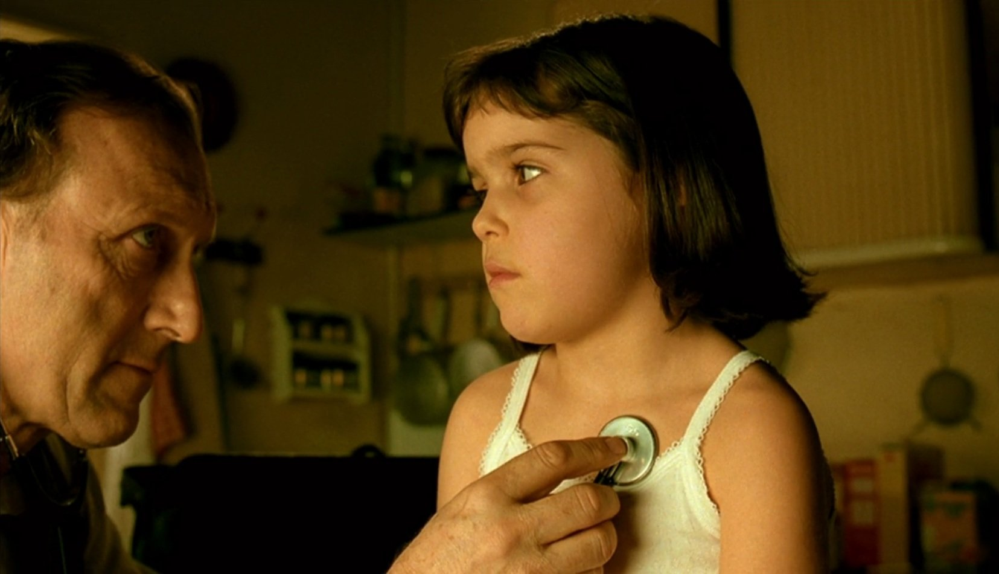
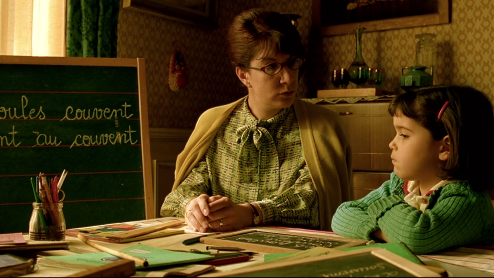

Amélie's Isolation
The musical Amélie, adapted from Jean-Pierre Jeunet's film, tells the story of a shy and inquisitive protagonist who has transformed Montmartre into her personal world. After discovering a mysterious box hidden in her apartment wall — a childhood treasure belonging to a stranger — she decides to return it, and in doing so discovers that orchestrating joy for others is far simpler than pursuing her own romantic connections.
Amélie's upbringing was marked by parental neglect. Her father, Raphaël, was a physician so anxious about her health that he rarely touched her, depriving her of normal physical affection. Her mother's death further destabilized an already fragile childhood environment. Even after leaving home, Amélie retreats into isolation: she observes others' lives voyeuristically, inserting herself into their stories from a safe remove, rather than engaging authentically with her own.
This production began development following the extended social isolation of the pandemic — a context that gives Amélie's arc particular resonance. The question her story asks is not unusual: how do we reconnect after we've learned, by necessity or by injury, to keep ourselves apart?

Child Neglect and Its Consequences
The musical's creators note that the Young Amélie character uses a puppet with an expressionless face to represent how the absence of parental affection prevents a child from learning what love looks like. The adult Amélie must learn by watching — by becoming a student of other people's emotional lives before she can risk her own.
Research on childhood attachment disorders is consistent: early disruptions to caregiving relationships impair the formation of social and romantic bonds throughout life. The U.S. Department of Health and Human Services documents that maltreatment can cause victims to "feel isolation, fear, and distrust, which can translate into lifelong psychological consequences" — including difficulty with relationships, depression, and a persistent expectation that the world is not safe for intimacy.
For a performer playing Amélie, understanding this history is not background context — it is the engine of the character. Every deflection, every interference in other people's lives instead of her own, every retreat from Nino when he gets close enough to matter: all of these are expressions of a survival strategy that was once necessary and is now a prison.
Risking Vulnerability
Establishing meaningful relationships requires courage — specifically the courage to be seen, which is the one thing Amélie's entire personality has been organized to avoid. The fears that prevent authentic connection are consistent across individuals: rejection, betrayal, judgment, the exposure of inadequacy. Amélie has all of them, and they are not irrational. They are the reasonable conclusions drawn from her experience.
Brené Brown defines the etymology of courage: from the Latin cor, heart — "to speak one's mind by telling all one's heart." She distinguishes between heroic courage and ordinary courage, arguing that the latter — "putting our vulnerability on the line" in everyday interactions — is harder, because it doesn't come with the cultural reward of being recognized as brave. It just feels like risk.
Amélie's journey is precisely this: not a heroic arc but an ordinary one. She doesn't overcome her fear through a single dramatic decision. She inches toward it, retreats, approaches again, and finally — at the end — allows herself to be found. The arc is not about becoming fearless. It's about deciding that what she might gain is worth what she might lose.
For the production team, this is the frame through which every scene choice must be filtered: where is Amélie on the continuum between self-protection and exposure? And what is the cost of each position she takes?